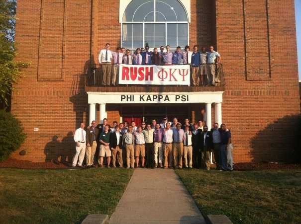

Phi Kappa Psi
 Nickname: Phi Psi President: Nick Harman | (910) 366-3941 | nsha222@g.uky.edu Recruitment: Tyler Hines | (847) 571-9977 | tjhi223@g.uky.edu 38 Members GPA: 3.04 National Website Chapter House address: 364 Aylesford Place Lexington, Kentucky 40508 Major community service or philanthropy events: Phi Kappa Psi is paired with Big Brothers, Big Sisters nationally, we continue to work with them at the University of Kentucky, Kentucky Beta Chapter. For the past three consecutive years we have created a philanthropy event through BBBS in which we use our Chapterhouse as a haunted house. Attendance has increased in the past two years and we look forward to once again having an increase in the 2013. Recent Awards: Most Improved Chapter GPA 2010 Earth Ball Champions 2011 and 2012 DG Anchor Splash Champions 2013 National history: Phi Kappa Psi was founded in 1852 by William Henry Letterman and Chares Page Thomas Moore. A flu epidemic had the two college students giving aid to their friends, where they learned to appreciate the joy of serving others. On February 19th, 1852 the two gathered friends together to talk about joining into an organization. The first chapter was created in Jefferson College and eventually spread to other states across the U.S. Chapter history: Kentucky Beta was founded at the University of Kentucky on April 23, 1988 and currently has thirty seven members. Nationally Phi Kappa Psi is partnered with Big Brothers, Big Sisters to support underprivileged kids and give them mentors for a brighter future. Founding dates: National Founding Date: February 19, 1852 Chapter Founding Date: April 23, 1988 Creed: I believe that Phi Kappa Psi is a brotherhood of honorable men, courteous and cultured, who pledge throughout their lives to be generous, compassionate, and loyal comrades; I believe that I am honor bound to strive manfully for intellectual, moral, and spiritual excellence; to help and forgive my Brothers; to discharge promptly all just debts; to give aid and sympathy to all who are less fortunate; I believe that I am honor bound to strengthen my character and deepen my integrity; to counsel and guide my Brothers who stray from their obligations; to respect and emulate my Brothers who practice moderation in their manners and morals; to be ever mindful that loyalty to my fraternity should not weaken loyalty to my college, but rather increase devotion to it, to my country, and to my God; I believe that to all I meet, wherever I go, I represent not only Phi Kappa Psi, but indeed the spirit of all fraternities; thus I must ever conduct myself so as to bring respect and honor not to myself alone, but also to my Fraternity; To the fulfillment of these beliefs, of these ideals, in the noble perfection of Phi Kappa Psi, I pledge my life and my sacred honor. Motto: "Live Ever, Die Never" "The Great Joy of Serving Others" Organizational vision: To serve our communities and enhance the education and advancement of our undergraduate members. Chapter colors: Hunter Green and Cardinal Red